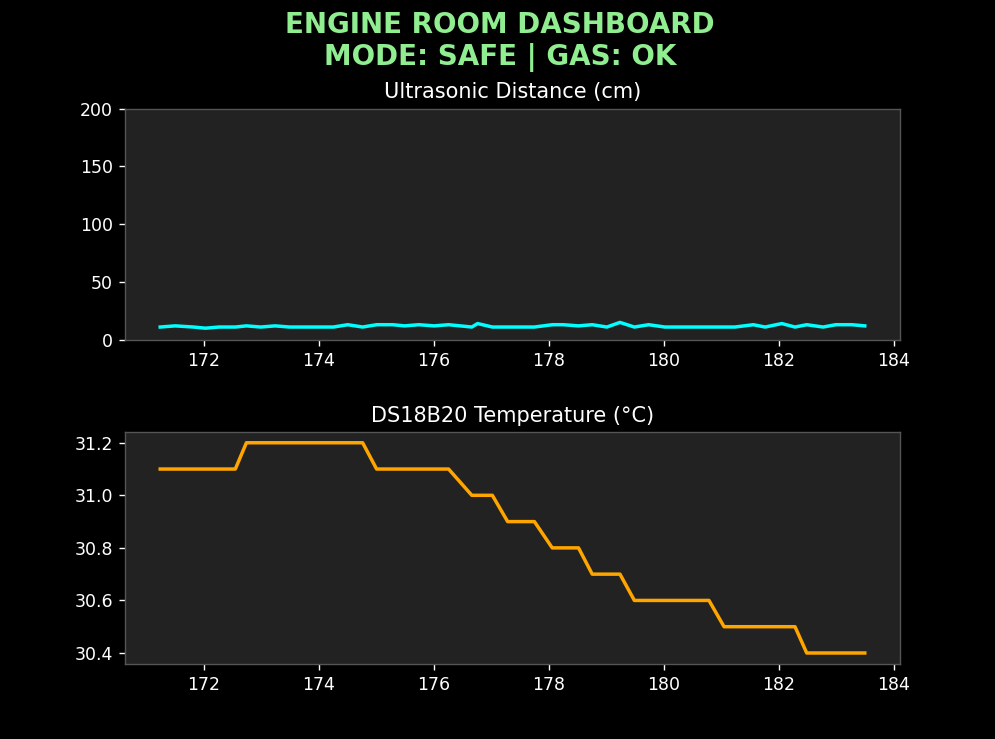
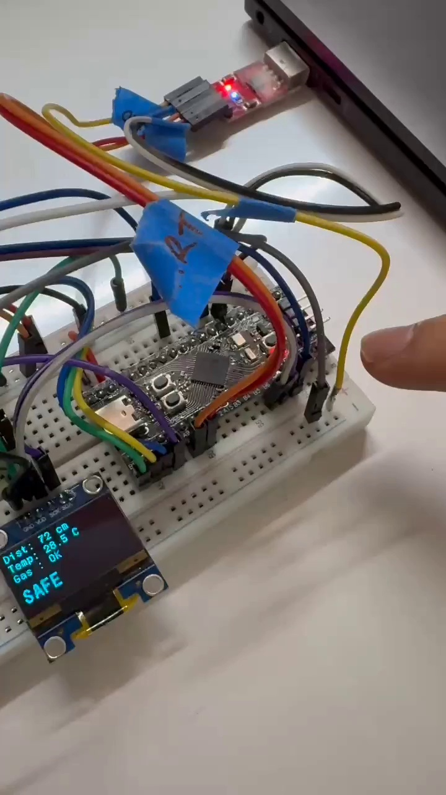
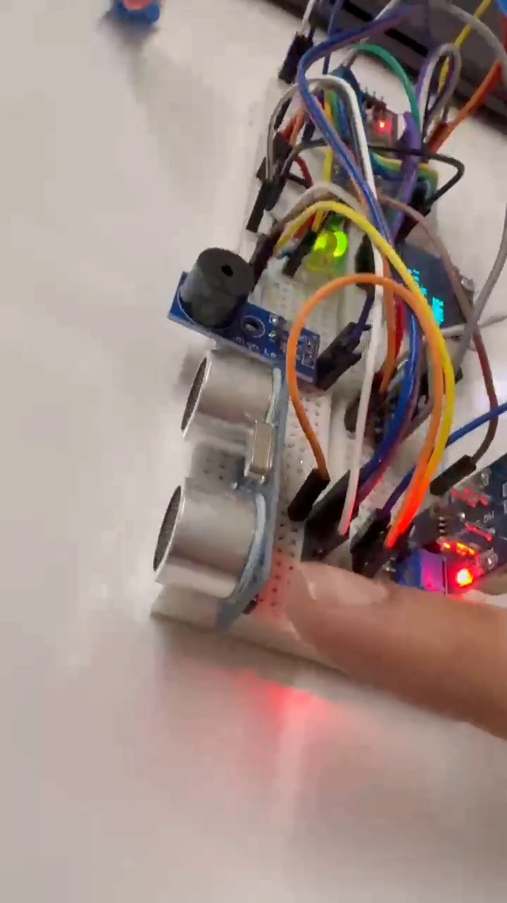
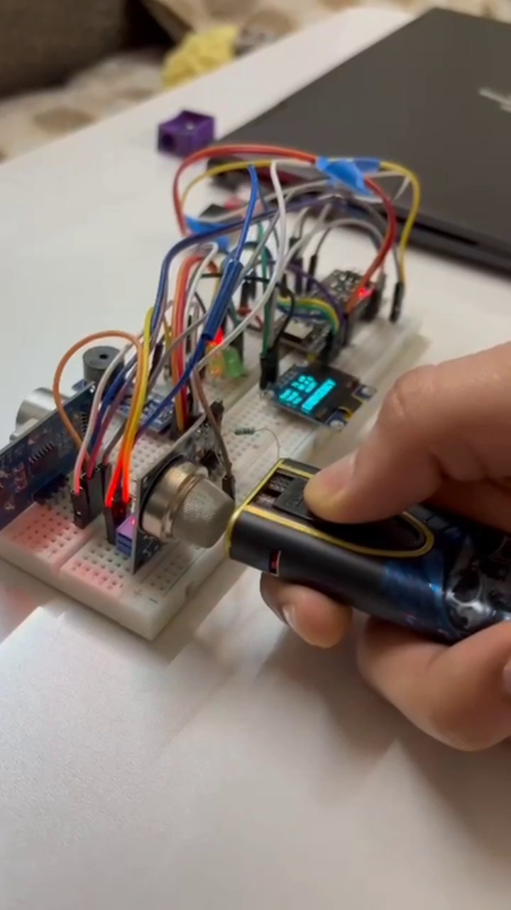

Smart Ship Engine Room
Safety & Vitals Monitor
An automated embedded guardian that continuously watches temperature, toxic gas leaks, and machinery clearances inside ships—stopping catastrophic engine fires before they happen.
High-performance 32-bit ARM processor executing custom bare-metal C code without operating system overhead.
- 96 MHz Core Clock: Microsecond-speed execution
- Bare-Metal Superloop: Never stalls or sleeps
- Dedicated Silicon: Direct timer & ADC capture
ARM Cortex-M4
- Clock: 96 MHz PLL Frequency
- Flash/RAM: 512 KB ROM / 128 KB RAM
- Execution: 100% Bare-metal C loop
Continuous non-stop surveillance monitoring heat buildup, explosive fuel gas leaks, and machinery clearances.
- DS18B20 Heat Probe: ±0.5°C accurate digital contact
- MQ-2 Gas Detector: Sniffs fuel fumes & smoke
- HC-SR04 Sonar: 40 kHz acoustic distance guard
Triple Guard Network
- DS18B20 Temp: ±0.5°C accurate 1-Wire
- MQ-2 Gas: Sniffs fuel & exhaust smoke
- HC-SR04 Sonar: 40 kHz ultrasonic pulses
Tri-stage audiovisual warning system that alerts engineers and command crew in under 15 milliseconds.
- Traffic-Light LEDs: Green, Yellow, and Red modes
- Dual-Tone Siren: Gentle warning to rapid sirens
- Onboard OLED: Live numbers right on the engine bay
Instant Dual Alarm
- Acoustic: 85 dB Piezo Warning Siren
- Visual: High-flux Red/Yellow/Green LEDs
- Local Screen: 128x64 OLED onboard display
Multithreaded laptop telemetry interface displaying rolling trendlines and exporting permanent safety logs.
- Real-Time Charts: Smooth 4 Hz visual updates
- Non-Blocking Worker: Zero dropped serial packets
- Excel CSV Logger: On-demand timestamped audit
Multithreaded PC Hub
- UART Line: 115,200 baud serial stream
- Background Worker: Zero dropped packets
- Audit Trail: Auto-exports timestamped CSV
Why Do Ships Urgently Need This?
Engine rooms are the most dangerous compartment on any vessel. Here is the problem we set out to solve:
- Engine rooms are deafeningly loud, boiling hot, and cramped.
- Humans cannot stand there 24 hours a day watching every single pipe.
- Crew members do rounds once every few hours—leaving long blind spots.
The Engine Bay Reality
- Heat & Noise: 55°C ambient air + 110 dB acoustic roar
- Atmosphere: Toxic diesel particulate & fuel mist
- Blindspots: 4 to 6 hours between human rounds
- A tiny spray of diesel onto a 400°C exhaust pipe ignites in seconds.
- Overheating bearings can seize and disable propulsion in rough seas.
- Toxic exhaust fumes can knock out crew members without warning.
Flash Fire Chain Reaction
- T+0s: Fuel line micro-fissure under 200 bar pressure
- T+12s: Atomized diesel mist hits unlagged turbo manifold
- T+28s: Autoignition at 380°C causes catastrophic flashover
- Build a small, affordable unit that sits right next to the engine.
- Reads all 3 vitals continuously and sounds an alarm on the spot.
- Works completely standalone—even if disconnected from the ship network.
Autonomous & Resilient
- Standalone: 100% offline edge monitoring, no cloud lag
- Efficiency: Consumes < 1 Watt of marine DC power
- Integrity: Hard-coded decision matrix prevents false trips
The 3 Dangers We Keep Watch Over
Instead of complicated, confusing data, our monitor focuses on the 3 critical vitals that cause 90% of engine accidents:
Sensor: MQ-2 Flammable Gas Detector
Sniffs out volatile fuel fumes, exhaust seepage, or melting wire insulation before an open fire breaks out.
- Target Hazards: Diesel mist, LPG, propane & smoke
- Rapid Reflex: Sub-millisecond analog voltage trigger
- Early Action: Trips Yellow Hazard alarm before ignition
Hydrocarbon Detection
- Mechanism: SnO2 heated ceramic resistance shift
- Gases: Diesel vapor, LPG, propane, exhaust smoke
- Threshold: Rapid comparator interrupt triggers alarm
Sensor: DS18B20 Digital 1-Wire Probe
Measures engine block and coolant temperature down to 0.1°C precision. Triggers an alert the moment heat crosses 45.0°C.
- Digital Precision: ±0.5°C accurate digital 1-Wire bus
- Threshold Safety: Trips Yellow at 45°C; Red if gas coexists
- Marine Rugged: Waterproof, oil-proof stainless probe
Thermal Boundary
- Resolution: 12-bit internal ADC (0.0625°C step)
- Mounting: Stainless-steel probe bolted to engine block
- Setpoint: 45.0°C early-warning benchmark
Sensor: HC-SR04 Ultrasonic Sonar
Shoots sound waves like a bat to verify machinery isn't wobbling loose, and warns if someone gets dangerously close to spinning shafts.
- 40 kHz Ultrasonic: Non-contact acoustic range finder
- Hardware Capture: 0% CPU overhead using STM32 TIM2
- Zone Defense: Guards flywheel, driveshaft & pumps
40 kHz Sonar Ranging
- Pulse: 8 bursts of 40 kHz ultrasonic waves fired
- Physics: Formula:
Distance = (Time × 343m/s) ÷ 2 - Safety: Guards crankshaft & driveshaft zones
The Hardware Pieces (How It Looks)

Everything fits on a compact board designed to mount directly in the engine bay
- STM32 Black Pill: The mini-computer that reads all sensors and runs our code.
- Distance Sensor: Bounces ultrasonic sound to measure distances from 2cm to 4 meters.
- Temperature Sensor: A stainless steel digital probe that touches hot engine surfaces.
- Gas Sensor: Detects dangerous flammable vapors in the air.
- OLED Screen: A bright mini-screen showing numbers right on the machine.
- Traffic Light LEDs: Green (All Safe), Yellow (Hazard Warning), Red (Emergency!).
- Buzzer: An audio alarm that beeps slowly for warnings and screams fast for emergencies.
Power Budget & Voltage Rails
- Main Supply: 5V DC via USB or regulated ship auxiliary line
- MCU Consumption: STM32F401 draws ~45mA @ 96 MHz PLL
- Sensor Network: MQ-2 heater (35mA) + DS18B20 + HC-SR04
- Displays & Alarms: OLED draws ~15mA, LEDs & Buzzer ~20mA
- Peak System Power: < 95mA total draw (< 0.48 Watts)
Clean Wiring & Connections (The Blueprint)

Each color represents an organized connection highway inside the chip
We configured the chip so every sensor has its own private lane—preventing traffic jams or mixed signals:
• PA5: Instant trigger line for Gas Detector
• PA9/PA10: Serial cable sending live stream to Laptop
• PB6/PB7: Fast screen cable for OLED display
• TIM2 (PB8): Hardware timer counting ultrasonic echo waves
• PB12–15: Output switches driving LEDs and Buzzer alarm
The Secret Sauce: Code That Never Freezes!
How does one microcontroller read 3 sensors, update a screen, beep a buzzer, and talk to a PC simultaneously without lagging?
The temperature sensor takes 0.75 seconds to convert heat into a number.
If you tell the chip to pause and wait (HAL_Delay), the entire machine goes blind for nearly a second! If gas leaks during that pause, the alarm won't sound. In an engine room, that delay is fatal.
- Total CPU Stoppage: 72,000,000 clock cycles wasted in dummy spin-loops
- Blind Gas Windows: Flammable vapor spikes go completely unnoticed
- Sensor Starvation: Sonar echo edges miss critical edge interrupts
Why Blocking Delay Kills
- Wasted Cycles: 72,000,000 clock cycles trapped in NOP loop
- Blindness: Misses ultrasonic pulse edges and gas trips
- Watchdog: Triggers false IWDG reset under heavy polling
A chef doesn't stand staring at the oven for 45 minutes doing nothing. They put food in, set a timer, and keep chopping vegetables!
Our code tells the temperature sensor: "Start reading, I will check back on you in 750ms." In the meantime, it measures distance 10 times, checks for gas every 10 microseconds, and keeps the alarm sounding!
- Asynchronous Scheduling: Timestamp verification with zero waiting
- Continuous Polling: Gas and Sonar sampled every microsecond
- 100% CPU Availability: Zero HAL_Delay calls anywhere in firmware
Cooperative Scheduling
- Request: Transmit 0x44 (Convert-T) and record millisecond timestamp
- Concurrency: Gas pin sampled every 10µs, Sonar captured by TIM2
- Retrieval: Read scratchpad registers only after timer ticks
3 Smart Coding Tricks We Implemented
The Problem: Waiting for ultrasonic sound echoes can waste up to 30ms of precious time.
Our Solution: We told the chip's internal timer hardware to measure the sound wave echo on its own. The CPU does zero work during sound transit!
- TIM2 Channel 1: Hardware pin PB8 triggers internal counter
- Zero Polling: CPU free to run fire safety checks in flight
- Sub-Millimeter: Precise acoustic edge detection
Input Capture ISR
- Hardware Pin: PB8 tied to TIM2 Channel 1
- Silicon Latch: Dual-edge counter captures pulse duration
- CPU Impact: 0% polling overhead during flight
The Problem: The temperature probe requires exact microsecond pulses (1µs to 60µs) to talk, but standard code only counts milliseconds.
Our Solution: We tapped directly into the ARM chip's internal cycle counter (DWT) ticking at 96,000,000 times a second for exact timing.
- Direct Register Tap: DWT->CYCCNT cycle counting
- 10.4 Nanoseconds: Resolution per clock pulse @ 96 MHz
- Rock Solid: 1-Wire protocol never drops bits or bytes
DWT Cycle Counter
- Control Reg:
CoreDebug->DEMCR |= 0x01000000 - Counter Reg:
DWT->CYCCNTticks at 96 MHz - Precision: Sub-microsecond (10.4 nanosecond resolution)
The Problem: Drawing numbers on a screen too frequently creates visual flicker and hogs the communication bus.
Our Solution: We batch OLED drawing and PC telemetry together exactly 4 times a second (every 250ms). Fast enough for human eyes, gentle on the processor.
- I2C Arbitration: Prevents sensor packet starvation
- Fluid Cadence: 250ms refresh matches human comprehension
- 93% Bus Savings: Reserved bandwidth for safety loops
250ms Refresh Cadence
- I2C Bandwidth: OLED redraw takes 18ms at 400 kHz
- Cadence: 4 Hz refresh matches human visual reaction
- Efficiency: Frees 93% bus bandwidth for sensor health
How the System Thinks (3 Simple Rules)
Temp < 45°C AND Air is Clean
2. HAZARD (Yellow Light + Slow Beep):
Temp ≥ 45°C OR Gas Detected
3. EMERGENCY (Red Light + Rapid Siren!):
Temp ≥ 45°C AND Gas Detected Together
This decision runs every 10 microseconds. There are no confusing in-between states—action is crystal clear.
Bare-Metal State Machine
set_mode(MODE_EMERGENCY);
Alarm_Trigger(LED_RED, SIREN_FAST);
} else if (temp >= 45.0f || gas_alert) {
set_mode(MODE_HAZARD);
Alarm_Trigger(LED_YELLOW, BEEP_SLOW);
} else {
set_mode(MODE_SAFE);
Alarm_Trigger(LED_GREEN, SILENT);
}
The Live PC Dashboard & Excel Recorder

Rolling graphs show distance and temperature trends over the last 50 samples
Even if a cable gets bumped, this clean text packet is immune to corruption.
SMART PYTHON MULTITHREADING- Worker 1: Listens to the serial cable in the background so data is never dropped.
- Worker 2: Allows typing
LOGto start saving timestamped CSV files on demand. - Main Window: Draws live Matplotlib graphs with colorful alert banners.
Threaded Ingestion Logic
while running:
raw = ser.readline().decode('utf-8').strip()
m = re.search(r"DIST:(\d+)\|TEMP:([\d\.]+)\|GAS:(\w+)", raw)
if m: telemetry_queue.put(m.groups())
Testing With Real Heat & Gas (The Proof)

System turned on. Clean air, temperature is a normal 29.2°C, green light shines, OLED shows live numbers.

Gas fumes introduced. Instantly turns Yellow, OLED flashes alert, buzzer starts steady 500ms warning beeps.

Heat crossed 45°C while gas is still present. Instantly triggers Red Emergency state with rapid 100ms siren alarm!
The Toughest Problems We Solved
The Problem: The temperature sensor takes 750ms to read. Traditional delay commands froze the chip and missed gas alarms.
How We Fixed It: We split the read into two states: ask for data now, and pick it up 750ms later while keeping all other sensors running at full speed.
Asynchronous State Machine
- State 1: Issue Convert-T (0x44) command to DS18B20
- Interleaving: Run sonar, gas, buzzer & PC telemetry 75 times
- State 2: Collect 12-bit scratchpad only when 750ms timer lapses
The Problem: Using software loops to time distance sound waves caused wild jumps because other tasks interrupted the timing.
How We Fixed It: We let the chip's internal silicon timer (TIM2) capture sound edges automatically in hardware. Rock-solid accuracy.
Silicon Edge Capture
- Hardware Latch: Silicon registers record start/stop microsecond stamps
- Interrupt Hygiene: Zero CPU cycle interference from other tasks
- Median Filter: Software suppresses physical acoustic reflections
The Problem: Standard microcontroller libraries only count in whole milliseconds, but 1-Wire sensors need 5-microsecond pulses.
How We Fixed It: We enabled the ARM chip's internal DWT cycle counter, which ticks every 10 nanoseconds for pinpoint accuracy.
DWT Counter Solution
- Limitation: HAL_GetTick() is 1,000x too coarse for 1-Wire
- Cortex Fix: DWT cycle register counts 96,000,000 ticks/sec
- Formula:
1 microsecond = 96 core clock ticks
The Problem: Waiting for serial messages made the Matplotlib graph lag and freeze up on the laptop.
How We Fixed It: We decoupled reading and plotting into separate background threads, creating a buttery-smooth 60 FPS display.
Producer-Consumer Pattern
- Producer Thread: Continuously drains 115200 baud UART buffer
- ThreadSafe Queue: Hands telemetry frames to main process
- Consumer GUI: Matplotlib blits graph updates smoothly at 60 FPS
What I Personally Learnt From This Project
Configuring internal registers, clock frequencies (96 MHz), and hardware peripherals directly in C.
Low-Level Control
Direct register manipulation, CMSIS headers, clock trees, PLL configuration, and MCU linker memory mapping.
How to architect systems where 4 different jobs run smoothly without any task starving or freezing the chip.
Real-Time Systems
Designing cooperative state-machine schedulers without RTOS footprint overhead, ensuring deterministic execution.
Mastered 1-Wire digital communication, fast 400 kHz I2C buses, and reliable UART serial links.
Bus Architecture
Mastered open-drain GPIO, pull-up resistor sizing, I2C address handshakes, and UART frame formatting.
Using hardware timer interrupts to count microsecond sound waves without wasting CPU cycles.
Silicon Automation
Timer prescalers, auto-reload registers (ARR), dual-edge input capture channels, and low-latency ISRs.
Writing multi-threaded Python applications to visualize sensor data live and export clean Excel/CSV logs.
Full-Stack Telemetry
PySerial daemon threads, thread-safe Queues, real-time Matplotlib animation, and maritime audit logging.
Tracking down loose ground wires, voltage drops, and timing bugs on real physical breadboards.
Bench Wisdom
Oscilloscope waveform probing, grounding discipline, parasitic capacitance mitigation, and real-world thermal testing.
How We Can Make This a Commercial Product
Replace USB serial cables with heavy-duty marine CAN bus so multiple sensor pods connect across the whole ship.
NMEA 2000 CAN
- Standard: ISO 11898-2 differential signaling
- Capacity: 64 nodes chained on 1 twisted pair
- Noise Immunity: High EMI rejection against diesel alternators
Beam live telemetry over satellite so shore-side fleet headquarters can check engine health anywhere on earth.
Global Fleet Sync
- Channel: Iridium SBD / Starlink Marine API
- Data: Compressed hourly JSON telemetry packets
- Reach: 100% planetary coverage across deep oceans
Train miniature neural networks on vibration sensors to catch failing bearings weeks before they overheat.
Bearing Prognostics
- Sensor: 3-axis high-g MEMS accelerometer
- Model: Quantized int8 TensorFlow Lite on Cortex-M4
- Early Warning: Detects micro-cracks weeks before seizure
Design a custom PCB inside an IP67 waterproof, flame-retardant aluminum housing built for diesel environments.
DNV-GL Standards
- Enclosure: CNC anodized aluminum IP67 waterproof
- Resistance: Diesel mist, salt spray, and 50g shock
- Safety: Explosion-proof sintered brass flame arrestor
Project Summary & Evaluation Q&A
- Solved a Real Problem: Continuous, automated 24/7 vitals monitoring for harsh ship engine rooms.
- Zero Freezing or Lag: Engineered a non-blocking cooperative superloop running all sensors seamlessly.
- Bench-Tested & Proven: Validated with live gas fumes and heat triggers with <15ms instant response.
- Complete System Suite: Built low-level C firmware, hardware wiring, and multithreaded Python telemetry.
Capstone Project Strengths
- Autonomous Edge Safety: Operates entirely offline without needing an active internet connection.
- Firmware Rigor: Zero-blocking cooperative time slicing prevents deadlocks and blind spots.
- End-to-End Vertical Build: Physical wiring, ARM registers, serial protocols, and PC desktop GUI.
Source code, pinout IOC files, Python dashboard, and sample logs available on GitHub.
Direct local files: Final Vid 1.mp4 & Final vid 2.mp4
THANK YOU!
Open for Questions & Evaluation Discussion